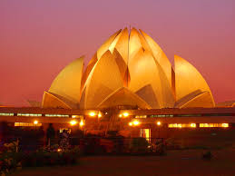
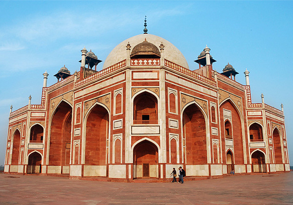

Welcome to....... India's capital
DELHI
Delhi is a city and a union territory of India. It has a population of about 25 million, making it the second most populous city after Mumbai and most populous urban agglomeration in India and 3rd largest urban area in the world.Delhi hosted the first and ninth Asian Games in 1951 and 1982 respectively, 1983 NAM Summit, 2010 Men's Hockey World Cup, 2010 Commonwealth Games, 2012 BRICS Summit and was one of the major host cities of the 2011 Cricket World Cup.
National Highways Passing Through Delhi
Delhi is connected by Road to various parts of the country through several National Highways:
Culture
Delhi's culture has been influenced by its lengthy history and historic association as the capital of India. This is exemplified by many significant monuments in the city. Delhi is also identified as the location of Indraprastha, the ancient capital of the Pandavas. The Archaeological Survey of India recognises 1200 heritage buildings and 175 monuments as national heritage sites.In the Old City, the Mughals and the Turkic rulers constructed several architecturally significant buildings, such as the Jama Masjid – India's largest mosque built in 1656 and the Red Fort. Three World Heritage Sites – the Red Fort, Qutab Minar and Humayun's Tomb – are located in Delhi. Other monuments include the India Gate, the Jantar Mantar – an 18th-century astronomical observatory – and the Purana Qila – a 16th-century fortress. The Laxminarayan temple, Akshardham temple, the Bahá'í Lotus temple and the ISKCON temple are examples of modern architecture. Raj Ghat and associated memorials houses memorials of Mahatma Gandhi and other notable personalities. New Delhi houses several government buildings and official residences reminiscent of British colonial architecture, including the Rashtrapati Bhavan, the Secretariat, Rajpath, the Parliament of India and Vijay Chowk. Safdarjung's Tomb is an example of the Mughal gardens style. Some regal havelis (palatial residences) are in the Old City.
The Lotus Temple of Delhi

Humayun's Tomb

BACK